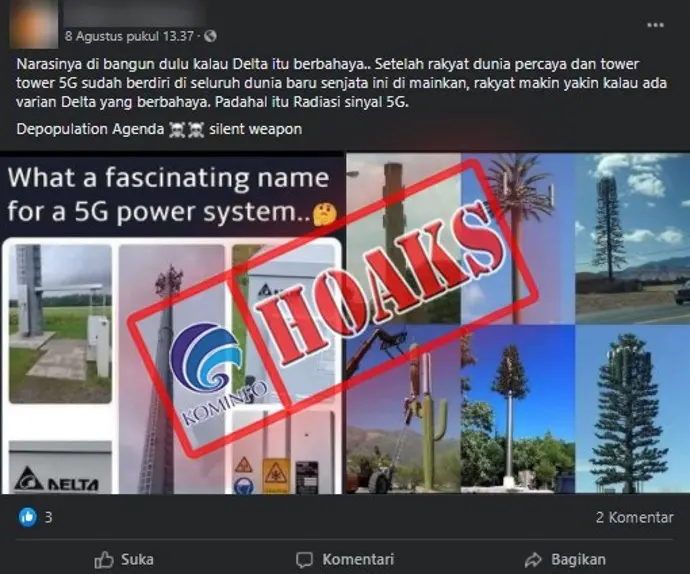

Materi Detektif Digital

Materi 1
Detektif Digital
Pelajari cara mengenali ciri-ciri hoaks sebelum terlanjur menyebarkannya.
6Poin Penting
1Studi Kasus
5Soal Latihan
Kenali Hoaks
Sebelum Terlanjur
Menyebarkannya.
Hoaks adalah informasi palsu yang dibuat dan disebarkan secara sengaja untuk menyesatkan publik. Di era digital, hoaks menyebar lebih cepat dari fakta karena memanfaatkan emosi dan kepercayaan kita.
Contoh hoaks yang pernah viral: “Vaksin COVID-19 Mengandung Mikrocip Magnetis” — telah dibantah oleh Kemenkes RI.
Lalu, bagaimana cara mengenalinya?
Judul Sensasional
Memakai kalimat yang sangat mengejutkan dengan tujuan memancing klik pembaca.
Sumber Tidak Jelas
Tidak mencantumkan nama penulis ataupun pihak media resmi yang bisa dipercaya.
Tanpa Tanggal
Sengaja menyembunyikan waktu kejadian agar informasi terkesan selalu berlaku.
Foto Manipulasi
Menggunakan gambar hasil editan atau dokumentasi yang tidak relevan dengan fakta.
Banyak Kesalahan
Terdapat kecacatan logika sains serta susunan tata bahasa yang tidak profesional.
Mendorong Sebar
Meminta masyarakat segera membagikan informasi tersebut tanpa mengecek kembali.
Lihat Sendiri Bukti Hoaks
yang Pernah Viral.

HOAKS TERBUKTI
Varian Delta Covid-19 Berasal dari Radiasi Jaringan 5G
Baca artikel asli“Kolase foto tower 5G beredar masif di Facebook dan WhatsApp, mengeklaim bahwa varian Delta Covid-19 itu fiktif. Gejalanya diklaim akibat radiasi sinyal 5G yang sengaja diciptakan sebagai agenda depopulasi global.”
Mari kita bedah satu per satu.
Judul Sensasional
Judul yang mengaitkan Covid-19 dengan radiasi 5G sengaja dirancang untuk memicu kepanikan massal secara instan.
Sumber Tidak Jelas
Menyebar via unggahan personal di media sosial, tanpa rujukan dari otoritas kesehatan resmi (WHO/Kemenkes).
Tanpa Tanggal
Tidak ada keterangan waktu atau kronologi kejadian, seolah informasi ini selalu relevan kapanpun disebarkan.
Foto Manipulasi
Kolase foto tower 5G asli digunakan untuk “membuktikan” klaim virus biologis. Foto nyata, namun konteks palsu.
Banyak Kesalahan
Menghubungkan virus dengan gelombang elektromagnetik 5G adalah kesalahan logika sains yang fundamental.
Mendorong Sebar
Narasi konspiratif secara alami mendorong orang untuk membagikannya tanpa perlu ajakan eksplisit sekalipun.
Waktunya Menjadi
Detektif Digital.
Baca tiap headline berikut. Gunakan insting dan ilmu yang baru kamu pelajari, apakah ini Hoaks atau Fakta?
dari 5 jawaban benar
Lanjut Jelajahi Materi